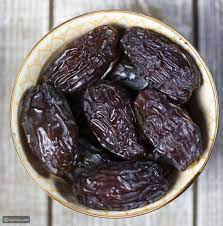
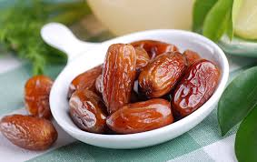
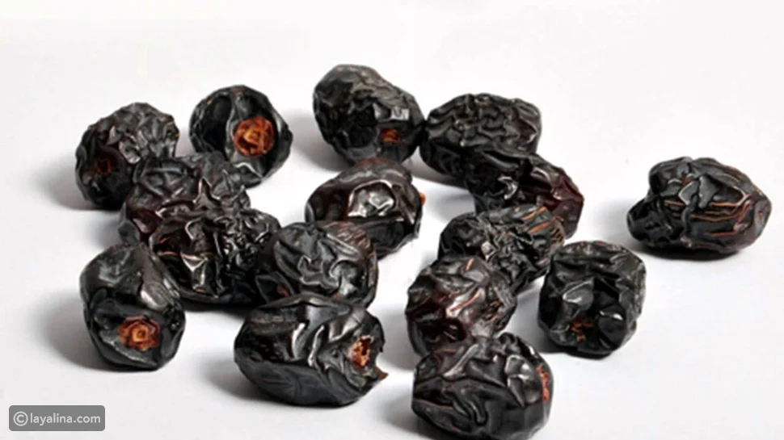
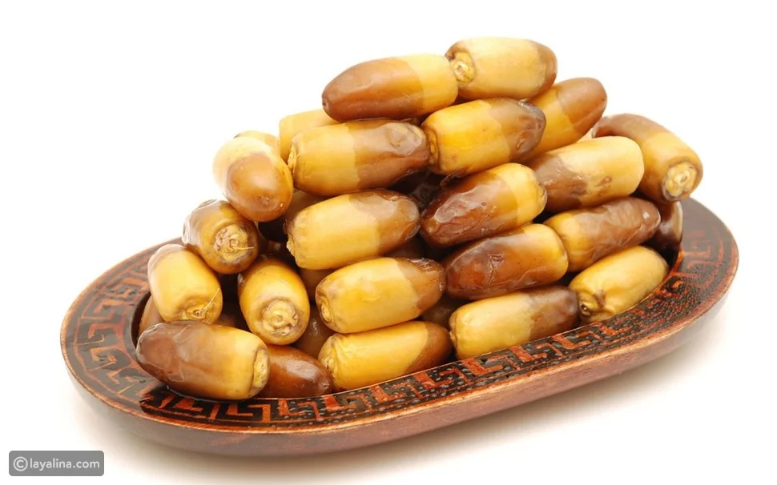

يعدُّ التمر غالباً آمناً لمعظم الأشخاص عند تناوله بالكميات المعتدلة والمستخدمة في الطعام، ولكن لا توجد معلومات كافية حول مدى أمان استهلاكه، وآثاره الجانبية المحتملة عند استخدامه بجرعاتٍ أكبر مثل استخدامه كدواء
يعدُّ التمر غالباً آمناً لمعظم الأشخاص عند تناوله بالكميات المعتدلة والمستخدمة في الطعام، ولكن لا توجد معلومات كافية حول مدى أمان استهلاكه، وآثاره الجانبية المحتملة عند استخدامه بجرعاتٍ أكبر مثل استخدامه كدواء

يعدُّ التمر غالباً آمناً لمعظم الأشخاص عند تناوله بالكميات المعتدلة والمستخدمة في الطعام، ولكن لا توجد معلومات كافية حول مدى أمان استهلاكه، وآثاره الجانبية المحتملة عند استخدامه بجرعاتٍ أكبر مثل استخدامه كدواء

يعدُّ التمر غالباً آمناً لمعظم الأشخاص عند تناوله بالكميات المعتدلة والمستخدمة في الطعام، ولكن لا توجد معلومات كافية حول مدى أمان استهلاكه، وآثاره الجانبية المحتملة عند استخدامه بجرعاتٍ أكبر مثل استخدامه كدواء
| النوع | الصورة |
|---|---|
| تمر العجوة |  |
| التمر الخضري | |
| الرطب |  |